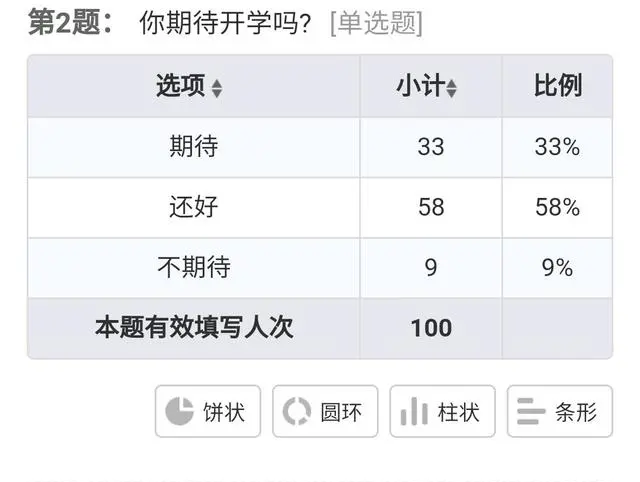
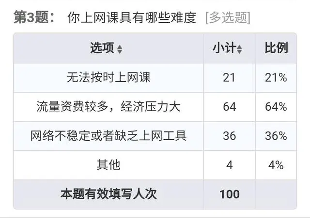
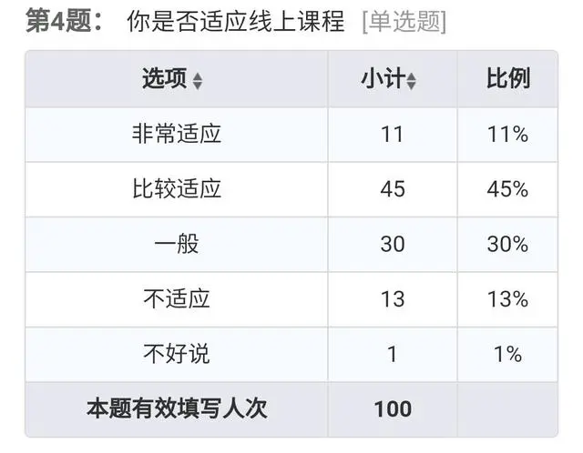

据不完全的调查,在我国某所大学有47%的学生对学习有消极的心态

如图2,发现:其一,6%的同学对自己的专业不感兴趣，学习情绪低落;其二， 20%的同学回避学习问题，这部分同学一般疏于管理自己的生活，在学习方面没有目标，比较随波逐流;其三， 25%的同学由于被认同感比较低，从高中到大学学习的转变不适应，学习成绩也不是同学们的主要关注点，所以不知道怎么在大学中展现自我，而造成学习比较消极。其四， 52%的同学对大学学习存在认识偏差（对学习本身的意义、学习的价值等等产生的错误认识），大部分学生认为学习不再重要，大学只需要“混日子”等，对学习也没有主动性，在没有老师的督促下，放任自流。由于大学学习内容的检验周期较长，通常一个学期只有期中与期末考试，这并不能给学生紧张感。此外，部分学科考试内容较所学内容更为简单，使得学生认为只需要“临阵磨枪”式的复习便可以通过考试，这也是造成学生态度消极的原因之一。因此，适度为大学生“增负”是必要的，从而引导学生更加重视考试，进而让学生更加投入课程学习。
由于这次特殊的假期,许多学校都开展了线上教学,通过网课的方式来保证学习的进度.对于网课的优劣,不同的人有不同的看法,在此次社会调查中,分别有23份来自小学,38份来自初中,23份来自高中,16份来自大学。这份问卷总共有16个问题,分别针对网课的方方面面进行了调查。
第2个问题是你是否期待开学?有33%的人是期待,58%的人是还好,9%的人是不期待。
第3个问题是上网课具有哪些难度?其中有64%的人认为,主要难度是流量资费较多,经济压力比较大。
第4个问题是是否适应线上课程,有45%的人表示比较适应,30%的人表示一般。